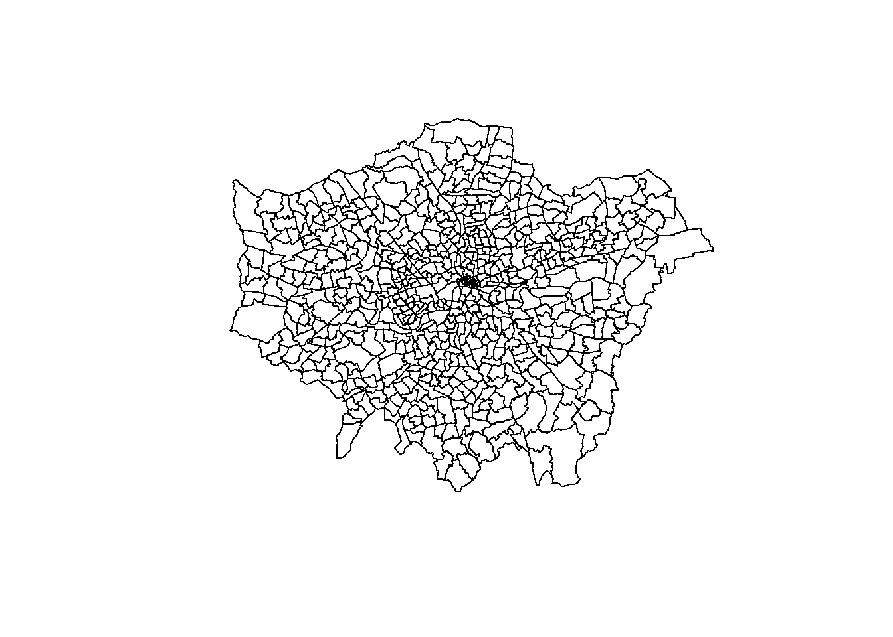

9 Geographic Mapping and Spatial Analysis
9.1 Introduction to Geographic Data in R
Geographic mapping and spatial analysis allow you to visualise data in a geographical context, which can be crucial for identifying patterns, trends, and relationships. In this chapter, we’ll explore how to work with geographic data in R, create basic maps, and perform simple spatial analyses.
SPSS lacks built-in support for geographic data formats, so users typically rely on external tools like GIS software for spatial analysis. R, however, provides comprehensive tools to manage and analyse spatial data within the same environment you use for statistical analysis.
9.1.1 Understanding Geographic Data Formats
Geographic data comes in various formats. The most common formats you’ll encounter in R are:
Shapefiles: A popular format for geographic data that consists of multiple files (
.shp,.shx,.dbf) that store geometry and attribute information.GeoJSON: A JSON format that encodes a variety of geographic data structures.
Other Formats: Other formats include
KML,GPX, and spatial databases, all of which can be handled in R.
9.1.2 Importing and Handling Spatial Data with the sf Package
The sf (simple features) package in R is designed for working with spatial data. It simplifies the process of importing, manipulating, and analysing geographic data.
Installing and Loading the sf Package:
Importing Shapefiles:
Importing GeoJSON Files:
Exploring Spatial Data:
You can explore Spatial Data by using the head() command and preview the base shapefile by using the plot() command.
# View the structure of the spatial data
head(spatial_data)
# Plot the spatial data
plot(st_geometry(spatial_data))Exercise!
Recreate these steps using the 2018 London Wards Shapefiles available at Statistical GIS Boundary Files for London. You should get the output shown below.
## Linking to GEOS 3.12.1, GDAL 3.8.4, PROJ 9.3.1; sf_use_s2() is TRUE
9.2 Geographic Coordinate Systems and Projections
9.2.1 Introduction to Coordinate Systems
When working with spatial data, it’s essential to understand the concept of geographic coordinate systems (GCS) and map projections. A geographic coordinate system uses latitude and longitude to define locations on the Earth’s surface. However, because the Earth is a three-dimensional shape (approximately an ellipsoid), representing it on a two-dimensional map requires a transformation, known as a map projection.
- Latitude and Longitude: These are the most common coordinates, often expressed in degrees. Latitude lines run parallel to the Equator, while longitude lines run from pole to pole.
- Projections: Map projections are methods of flattening the Earth’s surface onto a plane. Each projection distorts some aspect of the Earth’s surface (such as area, shape, distance, or direction), so choosing the correct projection is crucial for accurate spatial analysis.
9.2.2 Common Issues with Coordinate Systems in R
When working with spatial data in R, you might encounter issues related to coordinate systems, particularly when combining datasets from different sources. Here are some common problems:
- Mismatched Coordinate Systems: If you try to combine or overlay spatial data from different sources that use different coordinate systems, the data might not align correctly. For example, one dataset might use a geographic coordinate system (e.g., WGS84), while another uses a projected coordinate system (e.g., UTM).
- Unprojected Data: Spatial data might be in a geographic coordinate system (unprojected) rather than a projected system, which can cause distortions, especially when measuring distances or areas.
- CRS (Coordinate Reference System) Errors: Sometimes, the coordinate reference system (CRS) of a spatial object might not be correctly defined, leading to misalignments or errors in analysis.
9.2.3 Handling Coordinate Systems in R
The sf package in R provides tools to handle these issues effectively.
Checking and Setting CRS: When you load spatial data, it’s essential to check and, if necessary, set the correct CRS. You can use the st_crs() function to check the CRS of an sf object and st_set_crs() to set it to a specific coordinate system.
# Checking the CRS
st_crs(spatial_data)
# Setting the CRS to WGS84 (EPSG:4326)
spatial_data <- st_set_crs(spatial_data, 4326)Transforming CRS: If you need to align datasets with different CRSs, you can transform them using the st_transform() function.
Dealing with Unprojected Data: If your data is in a geographic coordinate system (e.g., WGS84) and you need to perform distance calculations, you should transform it to a suitable projected coordinate system first to avoid distortions.
9.2.4 Practical Considerations
Choosing the Right Projection: The choice of projection depends on the geographic extent of your data and the type of analysis you are performing. For local or regional analyses, UTM (Universal Transverse Mercator) is often a good choice because it minimises distortion within each zone.
Reprojecting Data for Visualisation: When creating maps, you might need to reproject your data to a coordinate system that balances area, shape, and distance for your specific region.
By understanding and correctly handling geographic coordinate systems, you can ensure that your spatial analyses in R are accurate and meaningful. This step is crucial in applications like crime mapping, where precision in geographic location can directly impact the insights drawn from the data.
Exercise!
Go to the EPSG website and explore the different coordinate options available for the United Kingdom. What is the EPSG code of the British National Grid projection?
9.3 Creating Basic Maps
R provides powerful tools for creating maps. This section will show you how to plot your spatial data and customise maps using ggplot2 and the sf package.
9.3.1 Plotting Data on Maps Using ggplot2 and sf
ggplot2, in combination with sf, makes it easy to create visually appealing maps.
Creating a Simple Map:

Adding Data Points to a Map:
# Assuming data_points is a data frame with longitude and latitude columns
ggplot() +
geom_sf(data = spatial_data) +
geom_point(data = data_points, aes(x = longitude, y = latitude), color = "red") +
theme_minimal()Exercise!
Use the London 2018 Ward Shapefile to create a map of London using ggplot2. Add a light blue point at (51.503618787766060, -0.09860017990274424) to represent the MOPAC offices. These coordinates were taken from Google Maps which uses a WGS84 projection which may differ from the projection used by the London Shapefile.
- Hint I: You will need to make a dataframe.
- Hint II: coord_sf() ensures that all layers use a common CRS.
9.3.2 Customising Maps
Customising maps allows you to enhance their readability and aesthetic appeal.
Customizing Colors and Labels:
gglot2 makes it simple to change the map titles, labels, and axes.
ggplot(data = spatial_data) +
geom_sf(aes(fill = some_attribute)) +
scale_fill_viridis_c() +
labs(title = "Your Map Title", fill = "Legend Title") +
theme_minimal()For example, we can colour each ward by its size in hectares.
ggplot(data = spatial_data) +
geom_sf(aes(fill = HECTARES)) +
scale_fill_viridis_c() +
labs(title = "London Ward Map Coloured by Ward Size", fill = 'HECTARES') +
theme_minimal()Adding Scales and Legends:
Geographic maps in R are fully customisable. The following example demonstrates one way how the colouring and formatting can be adjusted.
ggplot(data = spatial_data) +
geom_sf(aes(fill = HECTARES)) +
scale_fill_gradient(low = "white", high = "blue") +
labs(title = "London Ward Map Coloured by Ward Size", fill = "HECTARES") +
theme_minimal() +
theme(legend.position = "bottom")
9.4 Spatial Analysis
Spatial analysis involves examining geographic patterns, relationships, and trends within your data. R allows you to perform various spatial operations that can enhance your geographic analysis.
9.4.1 Basic Spatial Operations
Point-in-Polygon:
Given a list of points you may want to identify which polygon they fall in. This can easily be done using the st_within command.
# Check if points fall within polygons
points_in_polygons <- st_within(data_points, spatial_data)
print(points_in_polygons)For example, let us randomly create some points across London and then identify which ward they occur in.
# Set seed for reproducibility
set.seed(123)
# Number of points to generate
n <- 200
# Generate random latitude and longitude points within the bounding box of London
# Approximate bounding box for London:
# Latitude: 51.286760 to 51.691874
# Longitude: -0.510375 to 0.334015
latitudes <- runif(n, min = 51.286760, max = 51.691874)
longitudes <- runif(n, min = -0.510375, max = 0.334015)
# Create a dataframe
london_coords <- data.frame(
Latitude = latitudes,
Longitude = longitudes
)
# View the first few rows of the dataframe
head(london_coords)## Latitude Longitude
## 1 51.40326 -0.308797130
## 2 51.60611 0.302231262
## 3 51.45244 -0.002587795
## 4 51.64448 -0.075489049
## 5 51.66776 -0.170446096
## 6 51.30522 0.232896377# Convert the dataframe to a spatial sf object
london_coords_sf <- st_as_sf(london_coords, coords = c("Longitude", "Latitude"), crs = 4326)
## Check if points fall within polygons
#Before we can do this both spatial objects need to be in the same CRS
spatial_data_wsg <- st_transform(spatial_data, 4326)
#Check if points fall in polygon
points_in_polygons <- st_within(london_coords_sf, spatial_data_wsg)
#Print the results
print(points_in_polygons)## Sparse geometry binary predicate list of length 200, where the predicate was `within'
## first 10 elements:
## 1: 392
## 2: (empty)
## 3: 269
## 4: 325
## 5: 311
## 6: (empty)
## 7: 465
## 8: (empty)
## 9: 87
## 10: 84#The results are not very informative so we can replace the number with the area Name
# Extract the names of the areas where each point is located
area_names <- sapply(points_in_polygons, function(x) if(length(x) > 0) spatial_data_wsg$NAME[x] else NA)
# Add the area names to the original points dataframe
london_coords_sf$NAME <- area_names
# View the updated dataframe with area names
head(london_coords_sf)## Simple feature collection with 6 features and 1 field
## Geometry type: POINT
## Dimension: XY
## Bounding box: xmin: -0.3087971 ymin: 51.30522 xmax: 0.3022313 ymax: 51.66776
## Geodetic CRS: WGS 84
## geometry NAME
## 1 POINT (-0.3087971 51.40326) Hampton Wick
## 2 POINT (0.3022313 51.60611) <NA>
## 3 POINT (-0.002587795 51.45244) Lewisham Central
## 4 POINT (-0.07548905 51.64448) Bush Hill Park
## 5 POINT (-0.1704461 51.66776) Cockfosters
## 6 POINT (0.2328964 51.30522) <NA>Distance Calculations:
You can calculate the distance between two sets of points by using the st_distance command.
# Calculate distances between points
distances <- st_distance(data_points, reference_points)
# Print the distances
print(distances)Note that the input should be a spatial object. Remember, you can convert a dataframe of points into a spatial object using the st_as_sf function.
Exercise!
The British Transport Police have provided you with a number of crimes reported at varying locations across London. You need to identify which Borough they have occurred in.
| Longitude | Latitude | Borough |
|---|---|---|
| -0.19611111405556494 | 51.375258353438184 | ? |
| -0.30174186589110447 | 51.46320906930937 | ? |
| -0.19565513135661436 | 51.487172486590836 | ? |
| -0.13840606266909572 | 51.46153797665847 | ? |
| -0.09291579752832058 | 51.37534709116438 | ? |
| -0.13321537011710344 | 51.528459469086386 | ? |
9.4.2 Creating Choropleth Maps
Choropleth maps are a powerful way to visualise data across geographic areas. Here’s how to create them in R:
Basic Choropleth Map:
ggplot(data = spatial_data) +
geom_sf(aes(fill = your_variable)) +
scale_fill_viridis_c() +
labs(title = "Choropleth Map", fill = "Your Variable") +
theme_minimal()The Ward Profiles Dataset provides a wealth of demographic and related data for each ward in Greater London. We can merge (remember back to chapter 3?) this dataset with our spatial data to provide informative spatial maps.
#Load the ward profiles dataset
ward_profiles <- read.csv('data/ward_profiles.csv')
#Join the demographic data to the Spatial dataset
spatial_data <- merge(spatial_data, ward_profiles, by.x = "LAGSSCODE", by.y = "New.code")
#Create a Choropleth map of Employment Rates
ggplot(data = spatial_data) +
geom_sf(aes(fill = Employment.rate..16.64....2011)) +
scale_fill_viridis_c() +
labs(title = "Choropleth Map of Employment Rates Across London", fill = "Employment Rate") +
theme_minimal()
Exercise!
Create a choropleth map of London visualising the Turnout.at.Mayoral.election...2012.
- Hint: Make sure to check the variable type
9.5 Conclusion
In this chapter, we’ve explored the basics of geographic mapping and spatial analysis in R. You’ve learned how to import and manage geographic data, create basic maps, and perform spatial analysis tasks such as point-in-polygon operations and distance calculations. We’ve also seen how to create and customise choropleth maps. By mastering these skills, you’ll be able to extend your data analysis into the spatial domain, something that isn’t directly possible within SPSS.